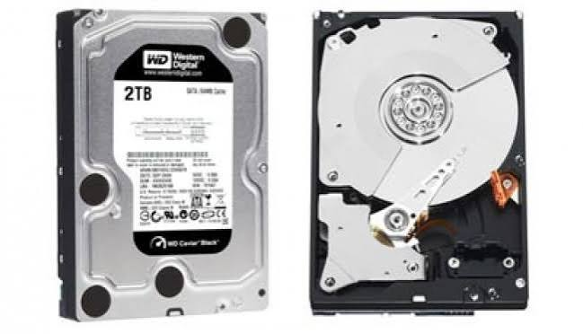
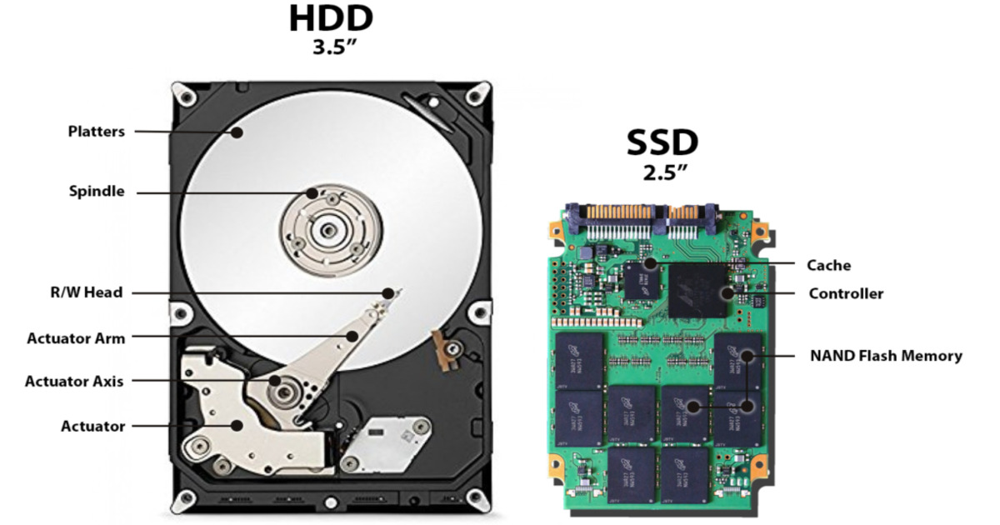

Elemen dan Capaian Pembelajaran
Capaian Pembelajaran Informatika Fase E (Kelas X).
Pada akhir Fase E, murid mampu memahami konsep struktur data dan algoritma standar; menerapkan proses komputasi untuk mendapatkan data yang berkualitas; menulis solusi rancangan program dalam pseudocode; memahami model komputer Von Neumann dan peran sistem operasi; memahami penggunaan mesin pencari dengan variabel lebih banyak; mengevaluasi informasi digital dengan membaca lateral; memahami keamanan jaringan dan aplikasi perkantoran; serta menghargai Hak Kekayaan Intelektual dan mengenal profesi di bidang Informatika.
Materi dan Lembar Kerja
Mulai dari membaca materi, lanjut ke LKPD, lalu uji pemahamanmu.
Arsitektur Komputer & Sistem Operasi
Bahan bacaan interaktif: Von Neumann, CPU, memori, input-output, dan fungsi sistem operasi.
Buka Materi →LKPD Computer Detective
Lembar kerja peserta didik untuk menyelidiki komponen dan cara kerja komputer.
Buka LKPD →Mini Game: Kuis Kilat
8 soal singkat dari materi. Jawab, lihat penjelasan, dan kumpulkan skor.
Main Sekarang →Komponen yang Akan Kamu Pelajari
Foto asli perangkat keras yang bekerja bersama dalam satu sistem.

HDD
ROMKuis Kilat
Jawab 8 pertanyaan dari materi. Coba raih skor sempurna!